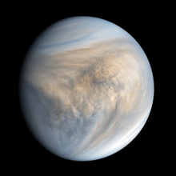

Venus has a thick, toxic atmosphere filled with carbon dioxide and it's perpetually shrouded in thick, yellowish clouds of sulfuric acid that trap heat, causing a runaway greenhouse effect. It's the hottest planet in our solar system, even though Mercury is closer to the Sun.
it's filled with volcanoes and lava with the hottest ground ever.
no one has created a metal that can survive on venus beacuse of how much you need to take in for it such as the heat
the chance of burning to lava or it just simply melting. no life (of we know in 2022)can survive on venus.
Back to home